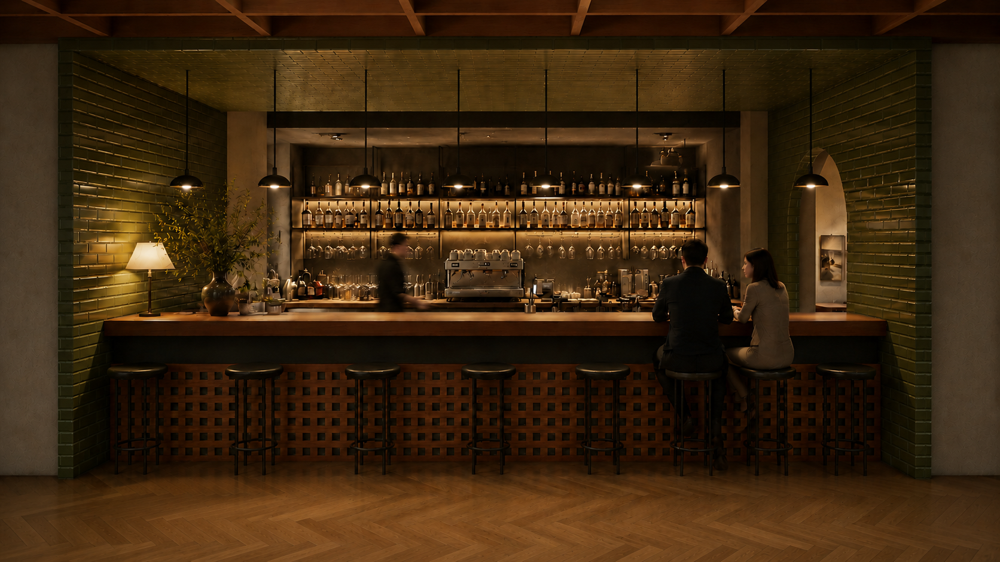
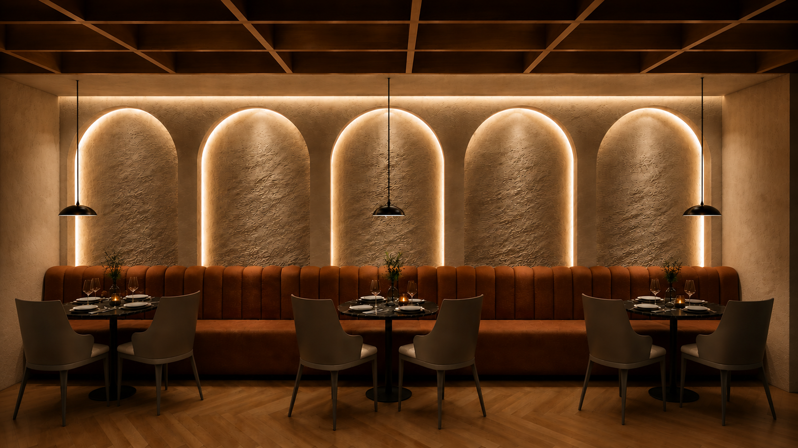
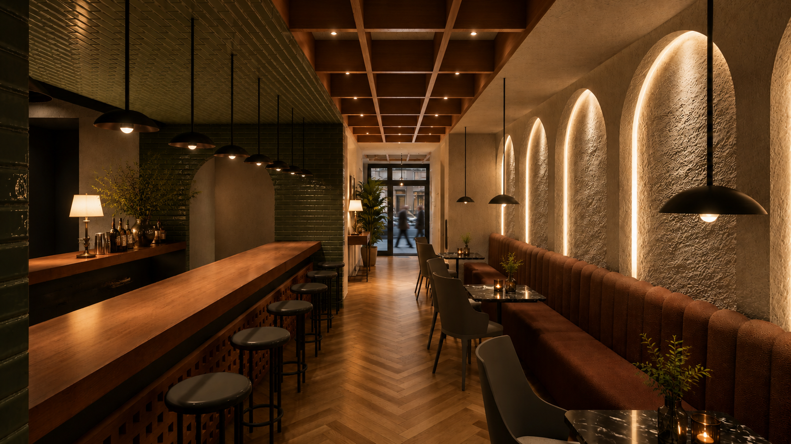

Hospitality Interior

Location
Year
Scope
Located within Hotel Pars in Shiraz, the International Restaurant was designed to offer a contemporary dining experience that balances elegance, comfort, and functionality. The project reimagines the restaurant as a welcoming destination for both hotel guests and visitors, creating an atmosphere that feels refined without sacrificing warmth or accessibility. The spatial composition is defined by a series of interconnected dining areas that provide varying levels of privacy while maintaining visual continuity across the interior. Carefully planned circulation allows guests and staff to move efficiently throughout the space, ensuring a seamless dining experience without interrupting the calm character of the restaurant. Natural materials, soft textures, and a restrained palette of warm tones establish a timeless architectural language. Timber finishes, stone surfaces, and subtle metal accents are complemented by layered lighting that combines natural daylight with carefully integrated artificial illumination, creating an inviting atmosphere from morning service through the evening. Furniture, lighting, and bespoke architectural elements were designed as a cohesive system, reinforcing the identity of the space while accommodating different dining experiences, from intimate gatherings to larger social occasions. Every detail was considered to enhance comfort, acoustics, and the overall quality of the interior environment. Hotel Pars International Restaurant demonstrates how thoughtful spatial planning, refined material selection, and carefully orchestrated lighting can transform a hospitality venue into a memorable architectural experience that reflects both contemporary design principles and the welcoming spirit of Iranian hospitality.


